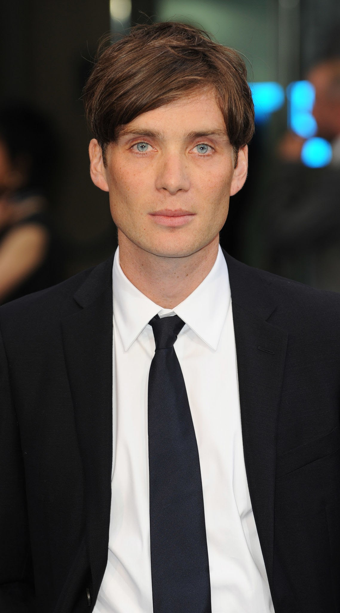

Cillian Murphy

Cillian Murphy é um ator irlandês, amplamente reconhecido por seu papel como Thomas Shelby na série de televisão Peaky Blinders.
Nascido em 25 de maio de 1976, em Douglas, Cork, ele começou sua carreira no teatro antes de fazer a transição para o cinema.
Murphy ganhou destaque internacional com filmes como 28 Days Later (2002) e Inception (2010), consolidando-se como um dos atores mais versáteis de sua geração.
Seu trabalho é caracterizado por performances intensas e uma presença magnética na tela, tornando-o um favorito tanto entre críticos quanto entre o público.
para mais informações visite a sua wikipedia: